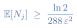

<!-- Slide 18: one pull reveals only epsilon-squared of evidence.  The paper's constants arrive in three presses.  See assets/evidence-meter.js. -->
<div class="l2-fig">
<svg class="meter-fig" data-mode="one" viewBox="0 0 760 300" width="900"></svg>
</div>
<div style="display:flex; justify-content:center; gap:4vw; align-items:center; margin-top:0.2em; min-height:6vh;">
  
  
  
</div>
<script src="../assets/evidence-meter.js" defer></script>
